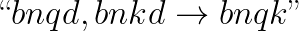
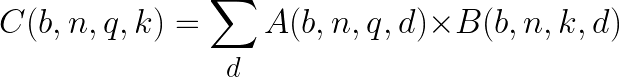

Composite Operators#
As machine learning continually evolves, new operations are regularly added to source frameworks such as TensorFlow and PyTorch. While converting a model to Core ML, you may encounter an unsupported operation.
In most cases, you can handle unsupported operations by using composite operators, which you can construct using the existing MIL operations. For an overview of MIL operations, see Model Intermediate Language.
All of the operations in the MIL Builder class are at your disposal to construct a composite operator. The following example defines a mb.matmul operation using the ML Builder to construct a composite operator. It converts the T5 Model, available in the Transformers library.
Install Transformers
You may need to first install Transformers version 2.10.0.
Import and Convert the Pre-trained Model#
Add the import statement and load the pre-trained model:
from transformers import TFT5Model model = TFT5Model.from_pretrained('t5-small')
The returned object is an instance of a
tf.kerasmodel, which you can pass directly into the coremltools converter:import coremltools as ct mlmodel = ct.convert(model)
To simulate a scenario in which coremltools lacks support for an operation, disable the
Einsumoperation needed to convert the model:from coremltools.converters.mil.frontend.tensorflow.tf_op_registry import _TF_OPS_REGISTRY del _TF_OPS_REGISTRY["Einsum"]
Run the conversion. The following error occurs, indicating an unsupported TensorFlow operation:

Decompose into Existing MIL Operators#
The TensorFlow documentation on Einsum refers to Einstein summation notation. You can use this notation to represent a variety of tensor operations such as reduce_sum, transpose, and trace, using a string. Einsum is usually a complicated operation, but with this example you don’t need to know all the possible cases, just the particular notation that this model uses.
The error trace shows that the model uses the following notation for Einsum:
{kind=link}
The above notation translates into the following mathematical expression:
{kind=link}
While the above may look complicated, it is essentially a batched matrix multiplication with a transpose on the second input:
You can decompose this operation with existing MIL operators. In fact, MIL supports this operation directly. To write a composite for this operation, follow these steps:
Import MIL builder and a decorator:
from coremltools.converters.mil import Builder as mb from coremltools.converters.mil import register_tf_op
Define a function with the same name as the TensorFlow operation. For this example, this is
Einsum. To define the function, grab inputs and define amatmuloperation using the MIL builder:@register_tf_op def Einsum(context, node): assert node.attr['equation'] == 'bnqd,bnkd->bnqk' a = context[node.inputs[0]] b = context[node.inputs[1]] x = mb.matmul(x=a, y=b, transpose_x=False, transpose_y=True, name=node.name) context.add(node.name, x)
Register the Function
Be sure to decorate this function to register it with the converter, as shown in the above code for TensorFlow (
@register_tf_op). The decoration ensures that the user-defined function will be invoked whenever an Einsum operation is encountered during the conversion. The corresponding decorator for PyTorch is@register_torch_op.With composite operation for Einsum defined, call the Core ML converter again and print
mlmodel. This verifies that the conversion is completed, and implies that the unsupported operation error is resolved:mlmodel = ct.convert(model) print(mlmodel)
Using Composite Ops with PyTorch Conversion#
For PyTorch, use the following import statement:
# example pytorch composite op
from coremltools.converters.mil.frontend.torch.torch_op_registry import
_TORCH_OPS_REGISTRY, register_torch_op
from coremltools.converters.mil.frontend.torch.ops import _get_inputs
from coremltools.converters.mil import Builder as mb
del _TORCH_OPS_REGISTRY["selu"] # only required if over-writing an existing translation
@register_torch_op
def selu(context, node):
x = _get_inputs(context, node, expected=1)[0]
x = mb.elu(x=x, alpha=1.6732632423543772)
x = mb.mul(x=x, y=1.0507009873554805, name=node.name)
context.add(x)
model = ct.convert(....)
More Examples#
For more examples, see the translation code for the supported TensorFlow ops and PyTorch ops.